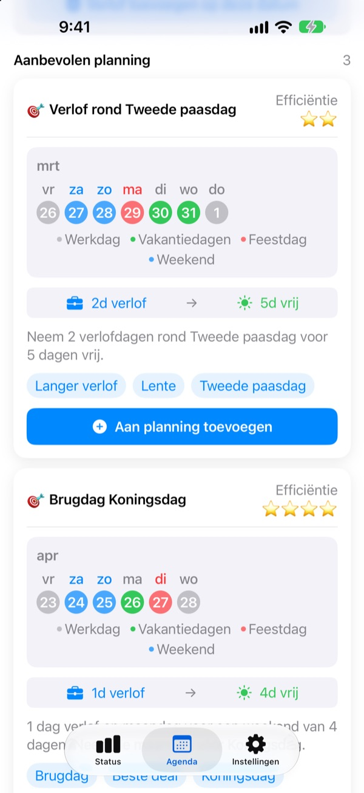
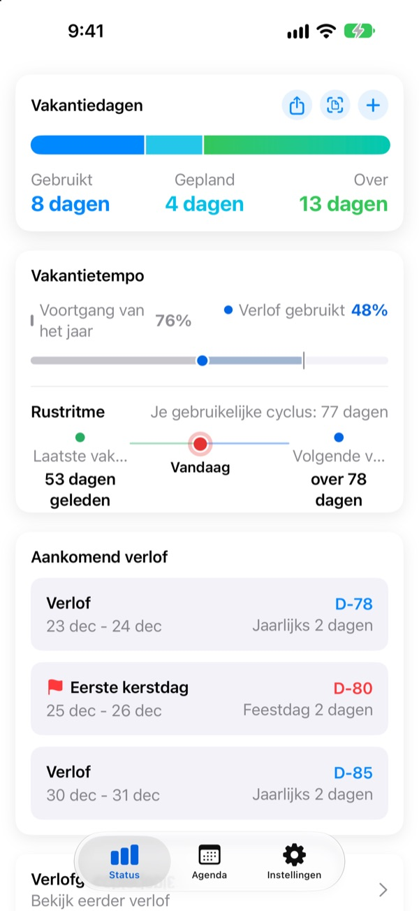
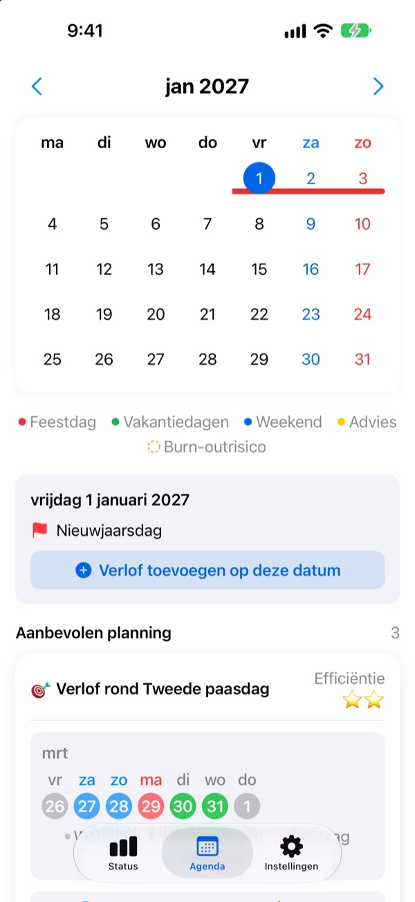
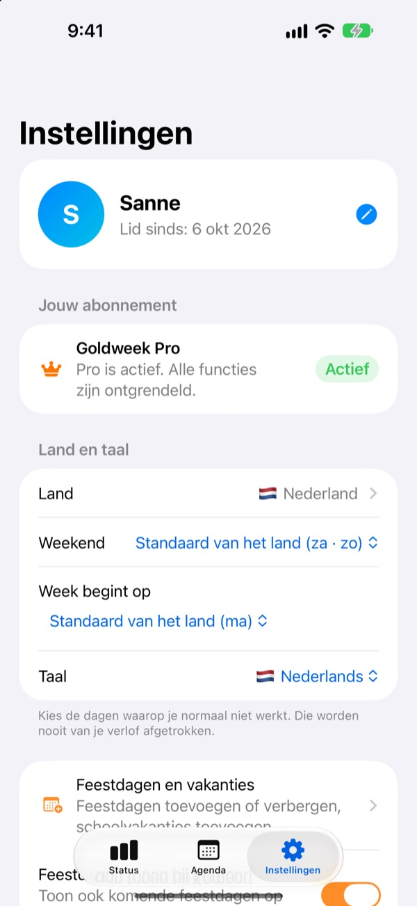

Weinig verlofdagen,
lang vrij
Goldweek koppelt feestdagen aan weekenden en laat precies zien op welke dagen je verlof moet nemen om het langst vrij te zijn. Nooit meer de kalender doorbladeren en tellen.
Gratis downloaden. Verlof bijhouden en suggesties blijven gratis.

Hoe ver kom je met je verlof?
Kies hoeveel dagen je vrij kunt nemen. Je ziet de langste vrije periodes die ze opleveren rond de komende feestdagen.
Moe van dagen tellen in de agenda?
Donderdag is een feestdag, dus vrijdag vrij nemen? Of de dag bewaren voor het lange weekend volgende maand? Na genoeg bladeren neem je zomaar een dag, en in december verdwijnt je resterende verlof. Goldweek rekent het voor je uit en laat de dagen zien waarmee je verlof het verst reikt.
Je verlof in één oogopslag
Totaal, opgenomen en over op één scherm. Ernaast zie je hoe ver het jaar al is en hoeveel verlof je hebt gebruikt, zodat je meteen ziet of je te veel spaart.
Je resterende dagen en komende vrije dagen staan in een widget op je beginscherm.

Verlof direct in de agenda
Feestdagen, verlof en voorgestelde brugdagen staan in kleur in de agenda. Tik op een datum om verlof toe te voegen of aan te passen, ook halve dagen, kwartdagen of uren.
Eerder verlof zet je in één keer over vanaf een foto van je HR-scherm.

Jouw land, jouw werktijden
Feestdagen van 42 landen, van Nederland en België tot de rest van Europa, Azië en Amerika. Verschillen ze per regio, kies dan de jouwe. Staat je land er niet bij? Voeg je eigen feestdagen toe.
Je kiest ook je weekenddagen, de eerste dag van de week en of je vast, parttime of in ploegen werkt.

In drie stappen begonnen
- 1
Vertel waar je werkt
Bij de eerste keer kies je je land en hoeveel verlofdagen je per jaar hebt.
- 2
Kies een suggestie
In het tabblad Agenda staan voorgestelde vrije periodes. Voeg toe wat je bevalt.
- 3
Houd je verlof bij
Tik op een datum of zet eerder verlof over vanaf een foto.
Zo wordt er gerekend
- Hele dag
- 1 dag van je saldo
- Halve dag
- 0,5 dag
- Kwartdag
- 0,25 dag
- Uren
- Naar je werkuren op die dag
- Ziekte, bijzonder verlof, dienstreis
- Gaan niet van je verlof af
- Bonusverlof
- Extra vrije dagen zoals compensatie-uren, apart bijgehouden met vervaldatum (Pro)
Je jaarlijkse verlof en de maand waarin je verlofjaar begint, pas je altijd aan in Instellingen.
Goed uitrusten is gratis. Plannen doen Plus en Pro.
Gratis
- Hele, halve en kwartdagen en uren, met je resterende verlof
- Feestdagen van 42 landen, eigen feestdagen en vakanties
- Alle suggesties voor dit jaar zien, er 3 toevoegen
- Tips over rustmomenten, herinneringen en widget
- Verlof toevoegen via foto
- iCloud-back-up en een gedeelde planning met je gezin
Plus en Pro
- Plus: Optimale jaarplanner
- Plus: Onbeperkt suggesties, ook voor vorig en volgend jaar
- Plus: Verlof naar je Agenda-app sturen
- Pro: Alles uit Plus, bonusverlof, jaarlimieten en meenemen per verlofsoort
- Pro: Schoolagenda importeren en agenda automatisch herkennen
- Pro: Samen vrij en familiedagen
Elk niveau is er als jaarabonnement of als eenmalige aankoop voor altijd.
Jaarabonnementen verlengen automatisch, tenzij je ze minstens 24 uur voor het einde van de periode opzegt. Beheer ze wanneer je wilt via Instellingen > Apple Account > Abonnementen.
Veelgestelde vragen
Mijn verlofsaldo klopt niet.
Controleer in Instellingen in welke maand je verlofjaar begint en hoeveel verlofdagen je in totaal hebt. Halve dagen (0,5) en kwartdagen (0,25) gaan er automatisch af, en soorten die niet meetellen, zoals ziekte, bijzonder verlof of dienstreizen, veranderen het saldo niet. Klopt het nog steeds niet, mail ons dan.
Mijn verlof staat niet in de agenda.
Geannuleerd verlof wordt niet in de agenda getoond. Controleer de status van de invoer in Verlofbeheer. Updaten naar de nieuwste versie kan ook helpen.
Hoe voeg ik bonusverlof toe?
Tik op + in het tabblad Status om Verlofbeheer te openen en gebruik onderaan het onderdeel Bonusverlof. Kies een soort (compensatieverlof, beloningsverlof, opladverlof…), vul het aantal dagen in en eventueel een vervaldatum. Bonusverlof wordt apart van je gewone verlof bijgehouden.
Ik heb betaald, maar er is niets ontgrendeld.
Tik onderaan het tabblad Instellingen op Aankoop herstellen. Je aankoop wordt hersteld met het Apple Account waarmee je bent ingelogd in de App Store. Werkt het niet, mail ons dan.
Ben ik mijn gegevens kwijt als ik de app verwijder?
Je gegevens staan op het apparaat, dus als je de app verwijdert, zijn ze weg. Zet iCloud-back-up aan om een kopie te bewaren die je later kunt terugzetten.
Kan ik eigen feestdagen toevoegen of er verbergen?
Ja. Bij Feestdagen en vakanties in Instellingen voeg je eigen feestdagen toe of verberg je standaardfeestdagen.
Welke landen worden ondersteund?
Goldweek kent de feestdagen van 42 landen. Kies je land in Instellingen (en je regio, waar feestdagen verschillen) en de agenda past zich meteen aan. Staat je land er niet bij, voeg de feestdagen dan zelf toe of vraag erom via feedback in de app.
Waar worden mijn gegevens bewaard?
Wat je invoert, blijft op je apparaat of in je eigen iCloud. Wij ontvangen alleen anonieme gebruiksstatistieken, anonieme crashrapporten en feedback die je zelf stuurt.
Voor alles wat hierboven niet beantwoord is, ideeën of bugs: mail leeo@kakao.com. We antwoorden meestal binnen een of twee werkdagen.